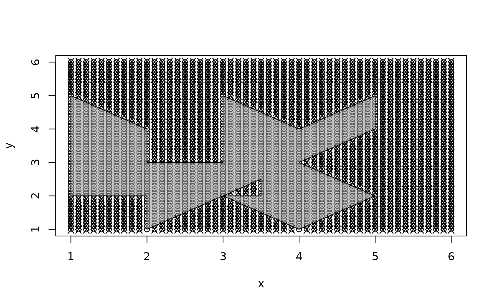

PtInPoly.RdPtInPoly works out, whether XY-points lie within the boundaries of a given polygon.
Note: Points that lie on the boundaries of the polygon or vertices are assumed to lie within the polygon.
PtInPoly(pnts, poly.pnts)The algorithm implements a sum of the angles made between the test point and each pair of points making up the polygon. The point is interior if the sum is 2pi, otherwise, the point is exterior if the sum is 0. This works for simple and complex polygons (with holes) given that the hole is defined with a path made up of edges into and out of the hole.
This sum of angles is not able to consistently assign points that fall on vertices or on the boundary of the polygon. The algorithm defined here assumes that points falling on a boundary or polygon vertex are part of the polygon.
A 3-column dataframe where the first 2 columns are the original locations of the points. The third column (names pip) is a vector of binary values where 0 represents points not with the polygon and 1 within the polygon.
#define the points and polygon
pnts <- expand.grid(x=seq(1,6,0.1), y=seq(1,6,0.1))
polypnts <- cbind(x=c(2,3,3.5,3.5,3,4,5,4,5,5,4,3,3,3,2,2,1,1,1,1,2),
y=c(1,2,2.5,2,2,1,2,3,4,5,4,5,4,3,3,4,5,4,3,2,2) )
#plot the polygon and all points to be checked
plot(rbind(polypnts, pnts))
polygon(polypnts, col='#99999990')
#create check which points fall within the polygon
out <- PtInPoly(pnts, polypnts)
head(out)
#> x y pip
#> 1 1.0 1 0
#> 2 1.1 1 0
#> 3 1.2 1 0
#> 4 1.3 1 0
#> 5 1.4 1 0
#> 6 1.5 1 0
#identify points not in the polygon with an X
points(out[which(out$pip==0), 1:2], pch='X')
